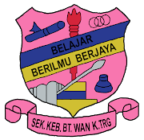
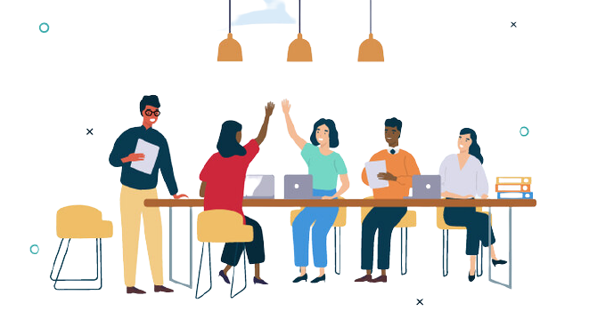
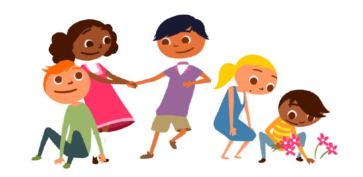

| INSTITUITION | YEARS |
|---|---|
 |
2006-2007 (1 year) |
|
 Prasekolah SK Bukit Wan |
2007-2008 (1 year) |
| Sk Bukit Wan | 2008-2014 (6 years) UPSR (3A 2B) |
| Smk Tengku Mizan Zainal Abidin | 2014-2018 (5 years) PT3 (5A 1B 3C 1D 1F) SPM (5A 3C) |
| UiTM Machang, Cawangan Kelantan | 2019-2022 (3 years) GPA (3.54) |
Interpersonal skills |
Interpersonal skills are a specific type of social skills. Interpersonal competencies help you interact,communicate, and collaborate with others effectively. Typical examples of interpersonal skills include empathy, active listening, and emotional intelligence
|
|---|---|
Teamwork skills |
Teamwork is the qualities and skills that enable you to collaborate well with others in conversations, projects, meetings, or other collaborations. The ability to work in a team depends on the ability to communicate well, listen positively, and be responsible and honest.
|
Social skills |
Social skills are skills that communicate and interact both verbally and non-verbally through gestures, body language, and our personal appearance.
|